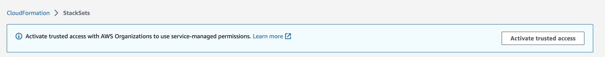

Ativar o acesso confiável com AWS Organizations
Para configurar as permissões necessárias para criar um conjunto de pilhas com permissões autogerenciadas, consulte Conceder permissões autogerenciadas.
Para criar um conjunto de pilhas com permissões gerenciadas pelo serviço você deve primeiro concluir as seguintes tarefas:
-
Habilitar todos os recursos no AWS Organizations. Com apenas recursos de faturamento consolidado habilitados, você não pode criar um conjunto de pilhas com permissões gerenciadas pelo serviço.
-
Ativa o acesso confiável com AWS Organizations. Após o acesso confiável ser ativado, o StackSets criará os perfis do IAM necessários na conta de gerenciamento da organização e nas contas (membro) de destino quando você criar conjuntos de pilhas com permissões gerenciadas por serviço.
nota
A função IAM vinculada ao serviço criada na conta de gerenciamento tem o sufixo
CloudFormationStackSetsOrgAdmin. Você só poderá modificar ou excluir esse perfil se o acesso confiável com o AWS Organizations estiver desativado. A função do IAM vinculada ao serviço criada em cada conta de destino tem o sufixoCloudFormationStackSetsOrgMember. Você só poderá modificar ou excluir esse perfil se o acesso confiável com o AWS Organizations estiver desativado ou se a conta for removida da organização de destino ou da unidade organizacional (UO).
Para obter mais informações sobre como gerenciar o acesso confiável com APIs, consulte:
Somente um administrador de conta na conta de gerenciamento tem permissões para ativar o acesso confiável. Um usuário administrador é um usuário do IAM com permissões totais na sua conta da AWS. Para obter mais informações, consulte práticas recomendadas do IAM e Criar o primeiro usuário administrador e grupo do IAM no Guia do usuário do IAM.
Com o acesso confiável ativado, a conta de gerenciamento e as contas de administrador delegado podem criar e gerenciar conjuntos de pilha gerenciados por serviços para sua organização.
Para ativar o acesso confiável no assistente Criar StackSet
Consulte Criar um conjunto de pilhas com permissões gerenciadas pelo serviço.
Para ativar o acesso confiável usando o console do AWS CloudFormation
-
Faça login na AWS como administrador da conta de gerenciamento e abra o console do AWS CloudFormation em https://console.aws.amazon.com/
. -
No painel de navegação, escolha StackSets. Se o acesso confiável estiver desativado, um banner será exibido solicitando que você ative o acesso confiável.
 -
Escolha Ativar acesso confiável.
O acesso confiável será ativado com êxito quando o banner a seguir for exibido.

nota
Ativar o acesso às organizações é o mesmo que Habilitar o acesso às organizações, e Desativar o acesso às organizações é o mesmo que Desabilitar o acesso às organizações. Esses termos foram atualizados com base nas diretrizes de marketing.
Para ativar o acesso confiável na página Acesso confiável para serviços da AWS do console do AWS Organizations
Consulte AWS CloudFormation StackSets e AWS Organizations no Guia do usuário do AWS Organizations.
Para desativar o acesso confiável
Consulte AWS CloudFormation StackSets e AWS Organizations no Guia do usuário do AWS Organizations.
Antes de desativar o acesso confiável com o AWS Organizations, você deve cancelar o registro de todos os administradores delegados. Para ter mais informações, consulte Registro de um administrador delegado.